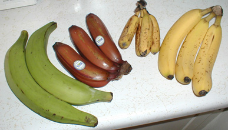
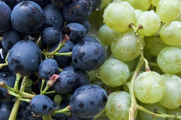

Apples are one of the most popular and delicious fruits in the world. They are rich in fiber, vitamins, and antioxidants, which can support a healthy lifestyle. Apples come in many different colors and flavors, including red, green, and yellow. They can be eaten fresh or used in juices, salads, desserts, and many other delicious foods. Read More Explore

Bananas are a delicious and nutritious fruit enjoyed by people around the world. They are a good source of natural energy, fiber, potassium, and important vitamins. Bananas are soft, easy to eat, and can be added to smoothies, desserts, cereals, and many other foods. They are also convenient to carry, making them a popular fruit for people of all ages. Read More Explore

Mango is known as one of the most delicious and popular tropical fruits in the world. It has a sweet taste, pleasant aroma, and juicy texture. Mangoes are rich in vitamins and antioxidants and can be enjoyed fresh or used in juices, shakes, desserts, salads, and many other foods. Different varieties of mangoes come in different sizes, colors, and flavors. Read More Explore
Oranges are juicy and refreshing citrus fruits that are enjoyed around the world. They are well known for their sweet and slightly tangy taste and are an excellent source of vitamin C. Oranges can be eaten fresh or used to make juices, salads, desserts, and many other delicious foods. Their bright color and refreshing flavor make them a favorite fruit for many people. Read More Explore

Grapes are small, juicy fruits that grow in clusters and come in different colors such as green, red, and purple. They are naturally sweet and can be enjoyed fresh or used to make juices, raisins, desserts, and other foods. Grapes contain vitamins, minerals, and antioxidants that can be part of a healthy and balanced diet. Read More Explore